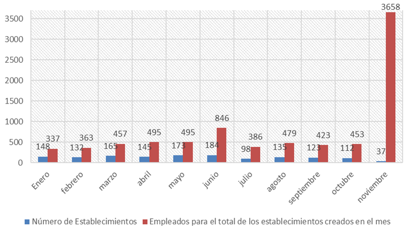

La tasa de desempleo en La Laguna al tercer trimestre de 2017 se ubica en 4.40%, casi medio punto porcentual debajo de las cifras del segundo trimestre, de acuerdo con la Encuesta Nacional de Ocupación y Empleo (ENOE), en sus indicadores estratégicos.
Esto significa que La Laguna ha estado en pleno empleo durante el segundo y tercer trimestre del 2017. Se le denomina así, cuando mínimo el 95% de la población que quiere y puede trabajar tiene empleo, y donde además, como máximo, el otro 5% de la Población Económicamente Activa (PEA) restante es población que está buscando trabajo, en proceso de reubicarse o simplemente decide no laborar. Para La Laguna, esta población es cada vez menor, lo cual indica que son cada vez más las personas que encuentran empleo, se reubican más rápido y que deciden trabajar. Sin embargo, la región aún está por encima del porcentaje nacional, ubicado en 3.55%.
Respecto a la calidad de los empleos, lo cual puede medirse a través de la tasa de condiciones críticas de ocupación; La Laguna sufrió en estos seis meses una variación de 3.98%, al pasar a una tasa de 10.57% en el tercer trimestre. Si bien esto indica menoscabo en la calidad del empleo, la región aun está debajo del 13.37% nacional.
Por otro lado, la informalidad en La Laguna se ha visto reducida gracias a la disminución en la tasa de desempleo. La tasa de informalidad pasa de 41.94% a 41.27%; ubicándose por debajo del dato nacional, el cual sí lleva una tendencia al alza con 57.19 % al tercer trimestre de este año.
El número de asegurados en el Instituto Mexicano del Seguro Social, aumentó a 5508 del segundo al tercer trimestre de 2017. Esto refuerza la idea de que pudiera mantenerse una tendencia a la baja en el tema de la informalidad.
Otro dato que refleja la calidad del empleo en la región, es el salario promedio en La Laguna por ocupación. Al tercer trimestre del 2017, los salarios son mayores para funcionarios y directivos en primer lugar, y en segundo, para trabajadores de la educación; con una diferencia entre ellos cercana a los 2 mil pesos.
El salario promedio más alto asciende a 12,534.03 pesos y el salario promedio más bajo es para los trabajadores agropecuarios con 3,770.17 pesos. Por otro lado, al calcular el salario promedio tomando en cuenta todas las ocupaciones, en La Laguna, una persona que labora estaría ganando en promedio 6,302.81 pesos.
La variación que ha presentado este indicador respecto al tercer trimestre de 2016 es de 10.82% al alza, pues en este periodo el salario promedio era de 5,687.46 pesos. Sin embargo, este incremento en el salario es nominal, pues restando la tasa anual de inflación de Torreón; la variación de precios entre septiembre de 2016 y de 2017; existe un crecimiento real anual en los salarios de 3.46%. Al comparar este porcentaje con el crecimiento real anual del país, -1.99%, para los salarios y el mismo periodo; el poder adquisitivo de La Laguna creció más que el de México, en 5.46 puntos porcentuales. Sin embargo, esto no alcanza para que el salario promedio de La Laguna sea superior al nacional, que se ubica en 6,598.07 pesos.
Inflación en La Laguna
Para efectos de este indicador, se considera la inflación de Torreón para toda la zona metropolitana, ya que es el único municipio de la región incluida por INEGI en el cálculo del Índice Nacional de Precios al Consumidor (INPC).
En el tercer trimestre la variación de los precios fue de 0.99% trimestral, mientras que la inflación anual, es decir, la variación en precios con respecto al tercer trimestre de 2016, fue de 7.36%; cifra que supera la inflación nacional, de 6.3%, para el mismo periodo.
El transporte es el bien con mayor incremento en su precio desde el tercer trimestre de 2016 hasta el tercer trimestre de este año. En los lugares dos y tres, de acuerdo a la importancia de su variación, también están otros servicios y alimentos, bebidas y tabaco. De los bienes que tuvieron un incremento mayor en sus precios, respecto al segundo trimestre del 2017, también se repiten los alimentos, bebidas y tabaco; y transporte. Otro bien con un incremento marcado en sus precios es la educación y el esparcimiento.
Nuevos Establecimientos en Torreón
Hasta noviembre de 2017, de acuerdo con la información recibida de Ventanilla Universal de la Dirección General de Desarrollo Económico, en Torreón se establecieron en total 1,452 empresas, que emplearon a 8,392 personas, de acuerdo a la información obtenida de las encuestas aplicadas a los contribuyentes que tramitaron su licencia de funcionamiento. Los principales giros de las empresas son: restaurantes y fondas, prendas de vestir y accesorios, elaboración y preparación de alimentos, oficinas administrativas, salones de fiestas infantiles, tiendas miscelánea. Junio fue el mes en donde se crearon más empresas cifra que asciende a 184, y el mes en el cual más empleos se generaron corresponde a noviembre, debido al establecimiento de una empresa en el giro de producción de automóviles, camiones y tractocamiones, que empleó a 3,500 personas.
Salarios promedio en la zona metropolitana de La Laguna
| Clasificación de acuerdo a la condición de ocupación | Salario promedio mensual para jornadas de 35 a 48 horas a la semana |
|---|---|
| Profesionales, técnicos y trabajadores del arte | $ 7,306.01 |
| Trabajadores de la educación | $ 10,485.93 |
| Funcionarios y directivos | $ 12,534.03 |
| Oficinistas | $ 5,963.86 |
| Trabajadores industriales artesanos y ayudantes | $ 5,377.39 |
| Comerciantes | $ 4,335.97 |
| Operadores de transporte | $ 6,013.82 |
| Trabajadores en servicios personales | $ 4,185.13 |
| Trabajadores en protección y vigilancia | $ 6,550.00 |
| Trabajadores agropecuarios | $ 3,770.17 |
Fuente: Encuesta Nacional de Ocupación y Empleo (ENOE) del tercer trimestre de 2017, INEGI.
Variación de la inflación en Torreón por objeto del gasto (anual y trimestral)

Fuente: Índice Nacional de Precios al Consumidor, INEGI.
Apertura de empresas a noviembre de 2017

Fuente: Elaborado por IMPLAN con información de Ventanilla Universal